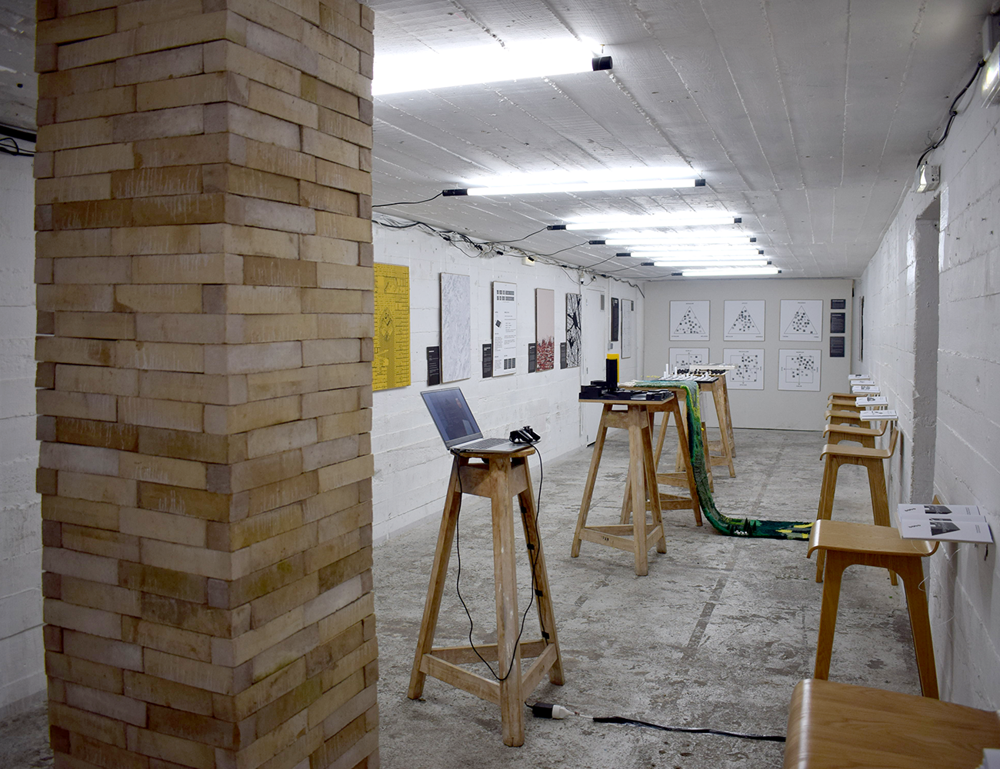
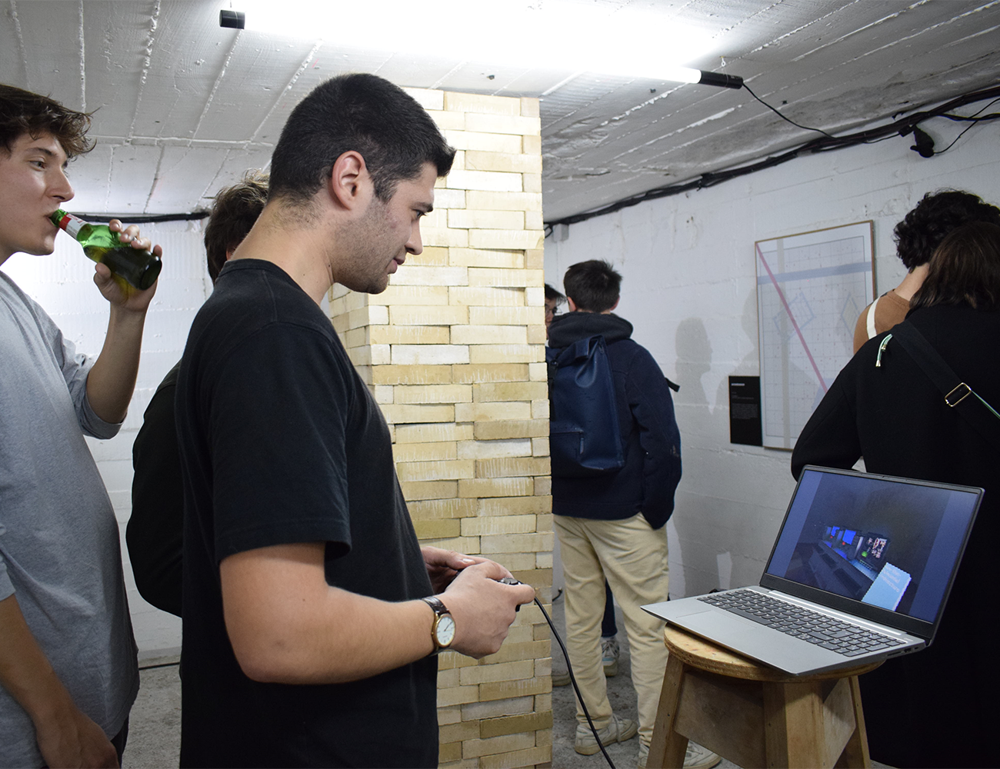
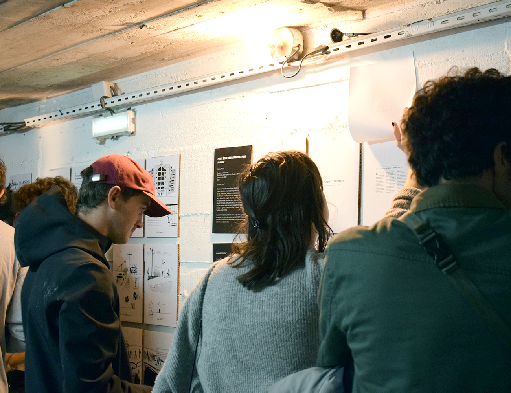
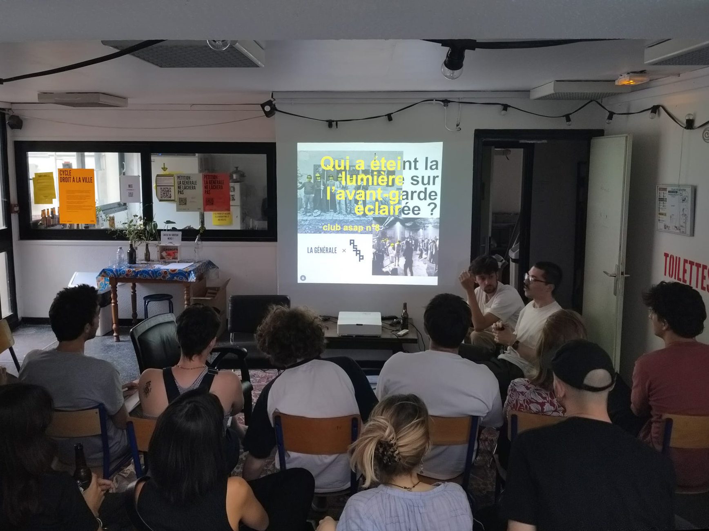
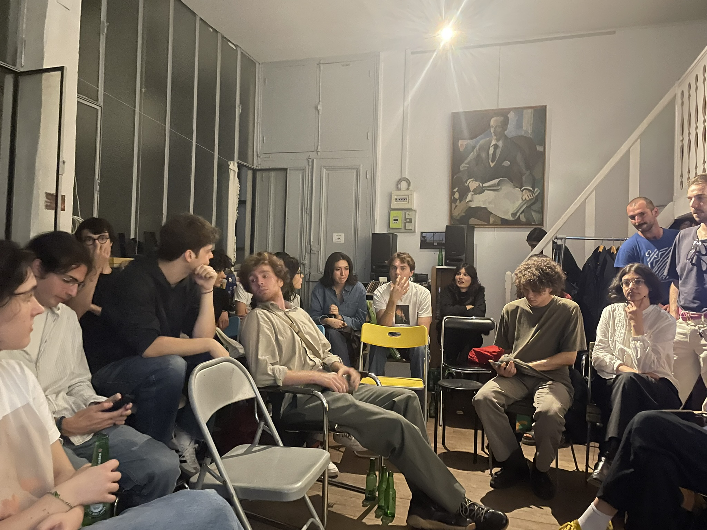
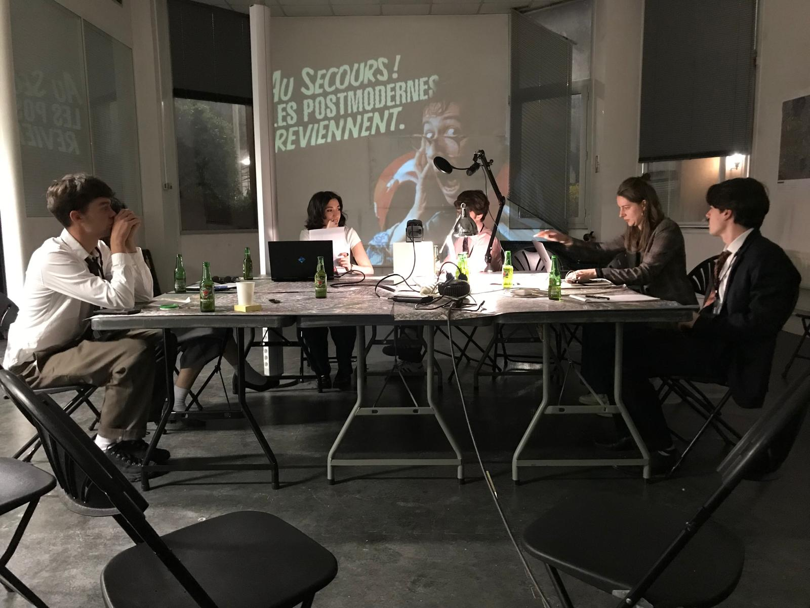

atlas des super-jeunes architectes et paysagistes
date : nov 2022, en cours
type : association
Fondée en 2022 en parallèle de la fin de nos études, ASAP est une association loi 1901 qui vise à créer un cadre de création et diffusion de théorie architecturale par et pour les nouvelles·aux entrant·e·s dans le champ.
Depuis sa création, cela a pris la forme d'exposition, de soirées débats et de diverses interventions en studio de projet dans plusieurs ensa. Bien que fondée par les deux associés de mostro, ASAP est un projet collectif qui met à contribution de nouvelles·aux participant·e·s à chacune de ses instances.
L'ensemble des évènements d'asap sont archivés sur son site dédié, asap.archi et sur sa page instagram @asap.archi

L'exposition "Tuez vos pères" tenue en novembre 2022 au Blockhaus DY10 (nantes) est l'acte fondateur d'asap. Rassemblant 9 "super-jeunes" architectes, elle les invitait à sélectionner un père spirituel à réinterroger via une production textuelle et graphique.
Précédée par une série de débats en introduction, l'exposition réinvestissait les travaux de divers références pour la nouvelle génération allant de Rossi à Olgiati en passant par Hondelatte.


L'exposition s'organise en trois séquences. En entrée, chaque participant·e a été invité·e à apporter une carte blanche sous la forme d'une production antérieure qui permet de situer son approche et d'expliquer d'où il ou elle parle. Dans un second temps, les productions anti-oedipiennes de chacun·e sontexposéess mettant en regard le texte imprimé à l'occasion dans des petits livrets emportables, la maquette située au centre de l'espace, et l'image géométrale. L'extrémité finale du parcours présente le travail diagrammatique réalisé avec un studio de master de l'ensa Nantes à l'occasion.


Depuis mars 2023, les clubs ASAP sont des soirées d'échange et de débat autour de présentations courtes produites comme des ballons d'essai théoriques par les participant·e·s volontaires. Rassemblant en général une trentaine de personnes, ces moments de discussion offrent aux courageux·ses volontaires un lieu pour tester leurs idées face à un public exigent mais bienveillant et surtout non-institutionnel


Les clubs ont été successivement accueillis par la maison de l'architecture d'ile de france, l'atelier bony mosconi et l'association la générale nord-est à paris. Une session exceptionnelle a été tenue dans la friche Salengro à l'invitation de l'agence d'architecture et d'urbanisme AWP. Depuis 2026 les sessions nantaises ont lieu dans les locaux de mostro.